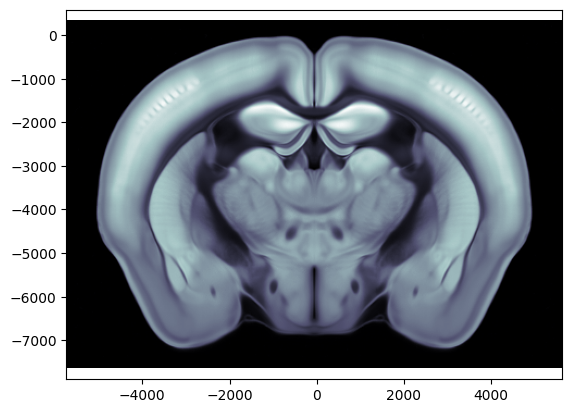
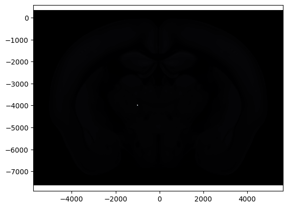

Working with IBL atlas object
Getting started
[1]:
from ibllib.atlas import AllenAtlas
res = 25 # resolution of Atlas, available resolutions are 10, 25 (default) and 50
brain_atlas = AllenAtlas(res_um=res)
/home/runner/work/iblenv/ibllib-repo/ibllib/atlas/regions.py:439: RuntimeWarning: invalid value encountered in cast
level=df_regions.depth.to_numpy().astype(np.uint16),
/home/runner/work/iblenv/ibllib-repo/ibllib/atlas/regions.py:441: RuntimeWarning: invalid value encountered in cast
order=df_regions.graph_order.to_numpy().astype(np.uint16))
Exploring the volumes
1. Image Volume
Allen atlas dwi average template
[2]:
# Access the image volume
im = brain_atlas.image
# Explore the size of the image volume (ap, ml, dv)
im.shape
# Plot a coronal slice at ap = -1000um
ap = -1000 / 1e6 # input must be in metres
ax = brain_atlas.plot_cslice(ap, volume='image')

Label Volume
[3]:
brain_atlas.bc.nxyz
Out[3]:
array([456, 528, 320])
[4]:
brain_atlas.regions.acronym.shape
Out[4]:
(2655,)
[5]:
brain_atlas.bc.xyz2i([-1000/1e6, -1000/1e6, -4000/1e6])
Out[5]:
array([190, 256, 173])
[6]:
brain_atlas.image[190, 256, 173] = 100000
brain_atlas.image[256, 190, 173] = 100000000
/tmp/ipykernel_3047/4055958408.py:1: DeprecationWarning: NumPy will stop allowing conversion of out-of-bound Python integers to integer arrays. The conversion of 100000 to uint16 will fail in the future.
For the old behavior, usually:
np.array(value).astype(dtype)`
will give the desired result (the cast overflows).
brain_atlas.image[190, 256, 173] = 100000
/tmp/ipykernel_3047/4055958408.py:2: DeprecationWarning: NumPy will stop allowing conversion of out-of-bound Python integers to integer arrays. The conversion of 100000000 to uint16 will fail in the future.
For the old behavior, usually:
np.array(value).astype(dtype)`
will give the desired result (the cast overflows).
brain_atlas.image[256, 190, 173] = 100000000
[7]:
ax = brain_atlas.plot_cslice(ap, volume='image', vmax=10000)

[8]:
# understainding